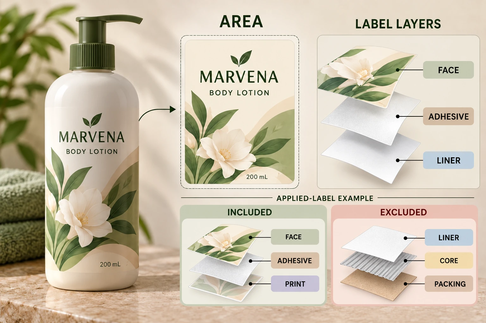

Define the material boundary
Ask what the requester needs: material remaining on one bottle, the complete supplied label with backing, unused conversion material or a packed shipment. These boundaries cannot share one unexplained label-weight entry.
List the components included in the requested figure. The applied label may involve face stock, adhesive, ink and protective finishing. The supplied web also includes a liner and areas outside the finished label. A roll or carton introduces other components that should not be assigned to one applied label by accident.
The caliper and basis-weight guide distinguishes mass per area from thickness. Use the supplier's appropriate component data here; do not convert microns into grams without the required material information and technical basis.
Use the area of the component being counted
For a rectangular label, width multiplied by height gives its rectangular area when the units are consistent. A shaped label needs its relevant actual area from the design or another supported method. A bounding rectangle can overstate that area and should be identified as an approximation if used.
Distinguish the label shape from the supplied web area. Liner margins and gaps can matter to a supplied-material calculation, while not belonging to the decorated face area on one pack. Identify how the actual format and waste boundary are treated.
Preserve the dimension source and revision. If the artwork is resized later, the old area should not remain attached to the new label. Likewise, an applied front-and-back set needs both identified components rather than a guessed representative label.
Show the arithmetic without hiding the gaps
For an illustrative rectangular face stock, 50 mm by 80 mm equals 0.004 square metres. If its stated basis weight were 60 grams per square metre, multiplying 0.004 by 60 would give 0.24 grams for that face area.
Those are hypothetical inputs used to demonstrate units. The figure does not include adhesive, ink, protective layers, liner or packing, and it is not a specification for any YT Labels material. It cannot be renamed total label weight merely because the arithmetic is exact.
For additional identified layers, obtain their applicable data and calculation method from the technical party. State whether the inputs are nominal, approximate or measured. A precise-looking sum of incomplete or mismatched data remains a weak estimate.
Plan an appropriate verification
Ask the responsible technical owner how the estimate should be checked for its intended purpose. If measurement is needed, agree the specimen boundary, preparation, instrument suitability, sample identity and reporting method. This article supplies no weighing procedure, sample size or acceptance tolerance.
Keep backing, cores and packaging separate where the question concerns applied material. If the specimen cannot be separated reliably, record that limitation rather than subtracting guessed values. The laboratory or supplier should explain what the reported result represents.
A whole-roll mass divided by its label count can be useful only within a clearly defined supplied-material boundary and with appropriate supporting inputs. Without those qualifications, the calculation can allocate liner, core and packing to the label on the bottle.
| Calculation field | Input needed | Question to resolve |
|---|---|---|
| Purpose | Applied component, supplied material or shipment | Which boundary answers the request? |
| Identity | Artwork and construction revisions | Do all inputs describe the same job? |
| Area | Shape, dimensions and area method | Is it actual label or web area? |
| Mass data | Applicable component basis weights or measured values | Which layers remain missing? |
| Units | Original units and explicit conversion | Does the calculation preserve the property? |
| Estimate | Method, exclusions and uncertainty | What may the figure be used to describe? |
| Verification | Technical owner and relevant measurement | What was actually checked? |
| Final record | Accepted scope and revision | Can another person reproduce the result? |
Begin with purpose and boundary, obtain matching data, calculate with visible units and route material gaps to the relevant owner. Release the figure only for the use its evidence supports. Do not treat this worksheet as a determination of regulatory reporting or fee obligations.

Let the request determine the effort
A hypothetical early design comparison may use a clearly bounded estimate to identify which missing input matters. It should not imply laboratory precision or a verified whole-pack total.
A final packaging-data request can require supplier-confirmed components and an appropriate technical review. That additional work is justified by the intended use of the figure, rather than by a preference for more decimal places.
The liner collection guide addresses another boundary: spent backing generated at the application site. Keep its stream data separate from material remaining on the consumer pack.
For cosmetic label specifications, send the current shape, dimensions, construction references and the exact mass boundary requested. Ask for the available supplier data and its stated scope. The contact form prepares a message; send drawings and data sheets by email or WhatsApp. Give the calculation an identifiable component before giving it a number.